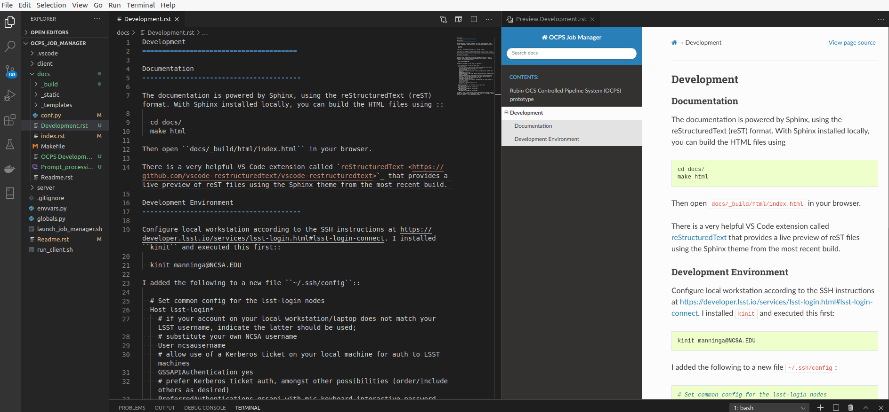

Development¶
Documentation system¶
Sphinx¶
The documentation is powered by Sphinx, using the reStructuredText (reST) format.
Install Sphinx using
apt-get install python3-sphinx
or on MacOS:
brew install sphinx-doc
With Sphinx installed locally, you can build the HTML files using
cd $REPO_ROOT/docs/
./build_docs
Then open _build/html/index.html in your browser.
File editors and viewers¶
The .drawio files require the open source editor from https://www.diagrams.net/.
There is a very helpful VS Code extension called reStructuredText that provides a live preview of reST files using the Sphinx theme from the most recent build.
Development environment¶
Configure local workstation according to the SSH instructions at https://developer.lsst.io/services/lsst-login.html#lsst-login-connect. I installed kinit and executed this first:
kinit manninga@NCSA.EDU
I added the following to a new file ~/.ssh/config:
# Set common config for the lsst-login nodes
Host lsst-login*
# if your account on your local workstation/laptop does not match your LSST username, indicate the latter should be used;
# substitute your own NCSA username
User ncsausername
# allow use of a Kerberos ticket on your local machine for auth to LSST machines
GSSAPIAuthentication yes
# prefer Kerberos ticket auth, amongst other possibilities (order/include others as desired)
PreferredAuthentications gssapi-with-mic,keyboard-interactive,password
# forward your local Kerberos ticket to the login node if you need to continue to another LSST server after the login
GSSAPIDelegateCredentials yes
# configure OpenSSH Control Master "multiplexing" (to allow reuse of an initial connection)
ControlMaster auto
ControlPath ~/.ssh/cm_socket_%r@%h:%p
ControlPersist 5m
# Define aliases onto full hostnames for each login node
Host lsst-login01
HostName lsst-login01.ncsa.illinois.edu
Host lsst-login02
HostName lsst-login02.ncsa.illinois.edu
Host lsst-login03
HostName lsst-login03.ncsa.illinois.edu
I logged in using a local terminal session and authenticated with my password and Duo 2FA. Subsequently I could browse remote files on lsst-login using Nautilus by opening sftp://manninga@lsst-login.